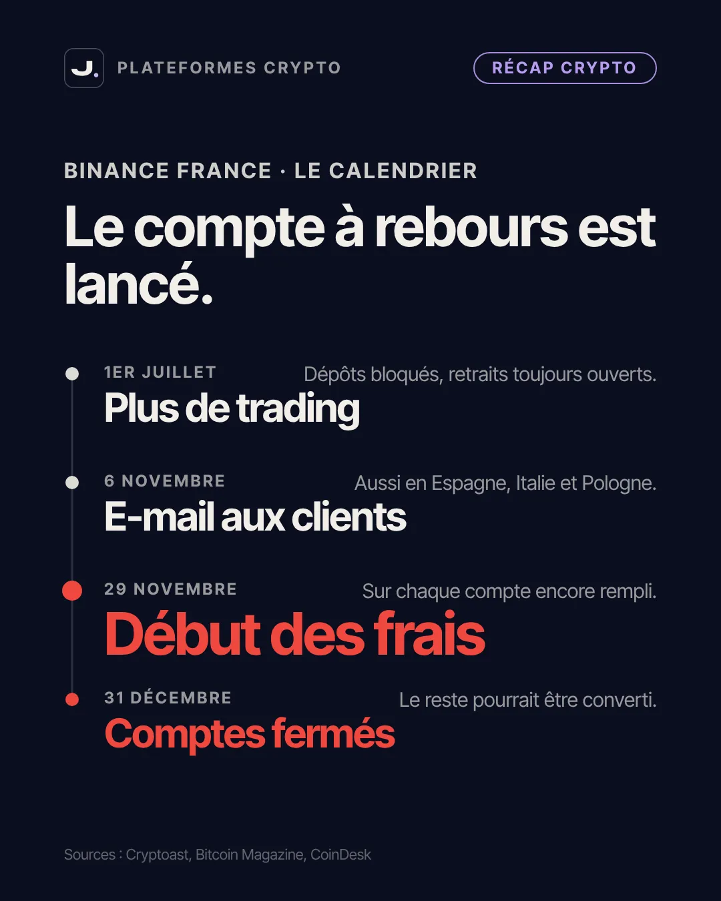
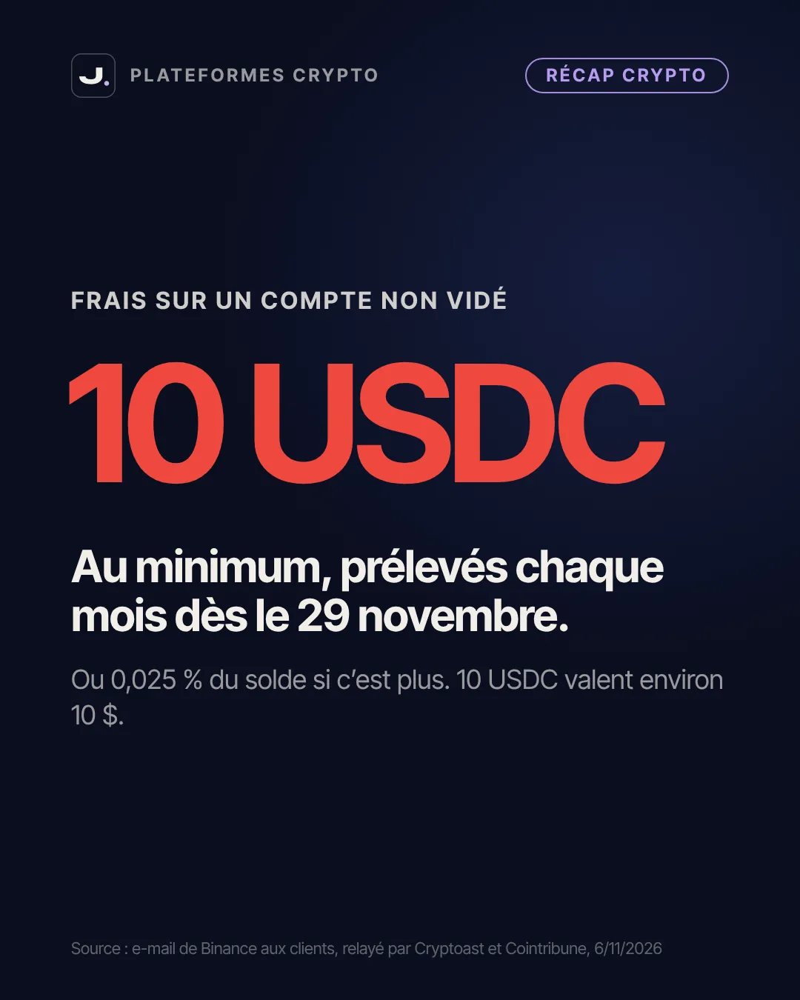
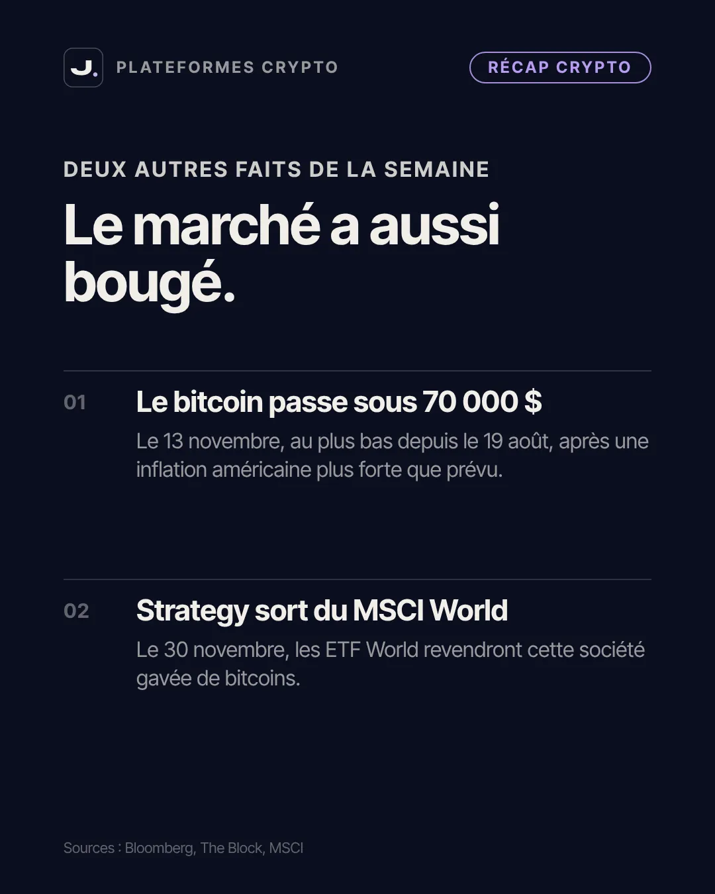
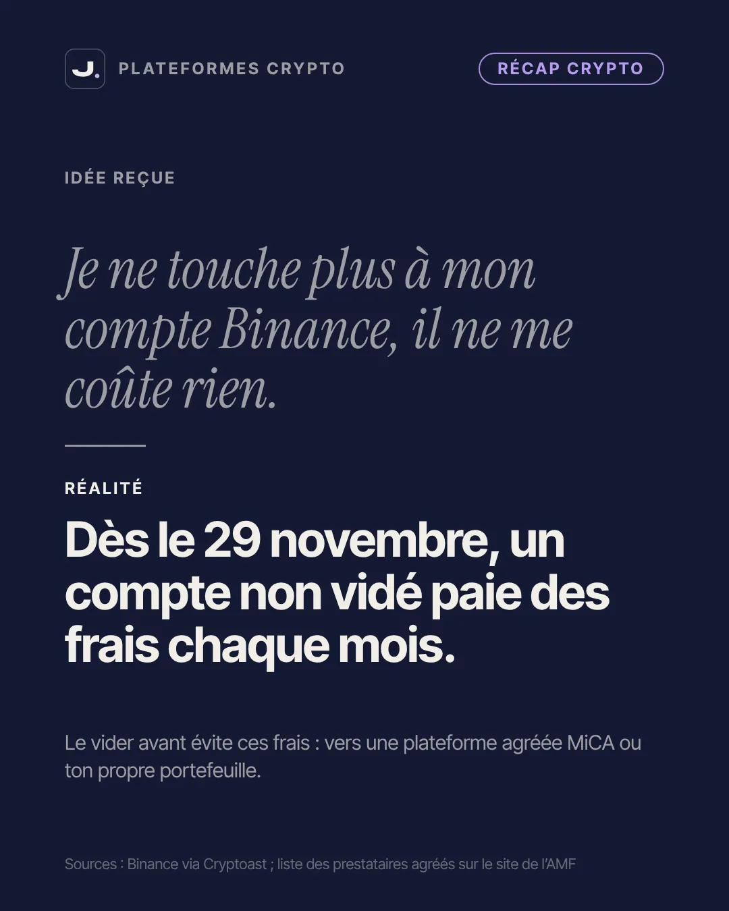
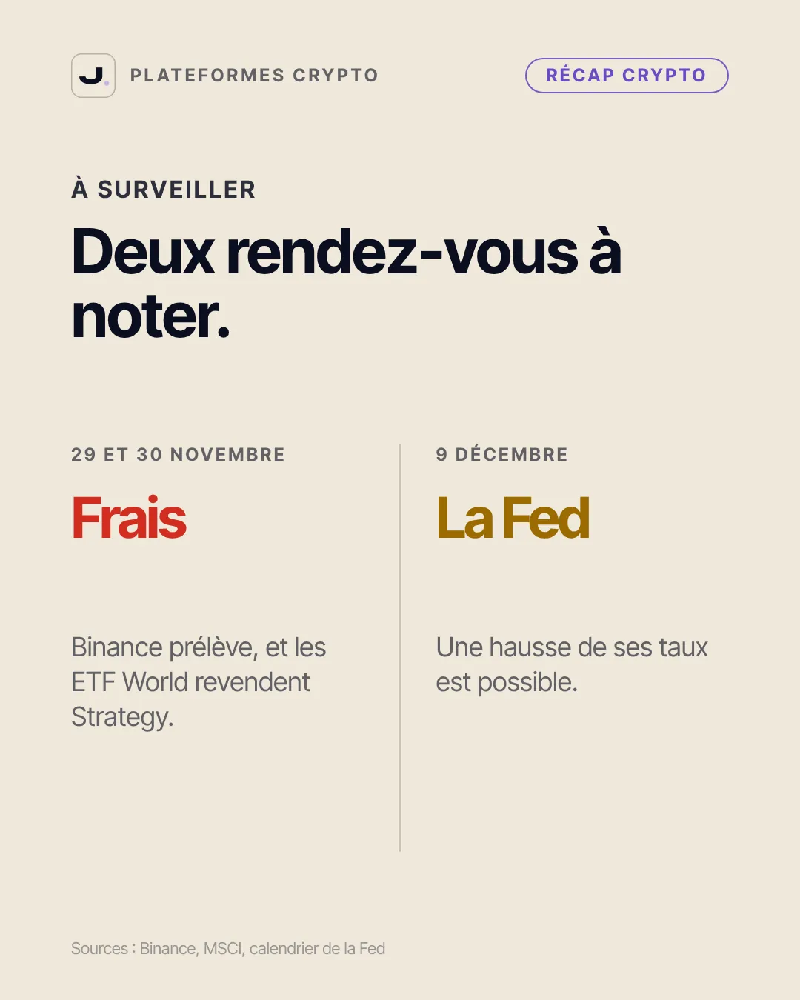
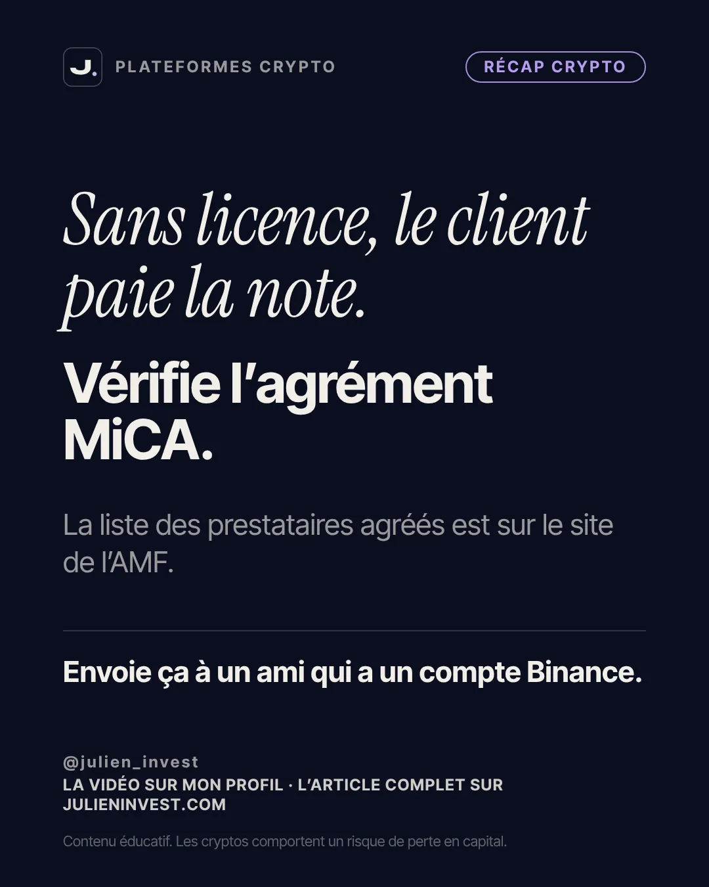

Cet article approfondit mon récap crypto de la semaine. Si tu découvres le cadre européen, commence par mon guide sur MiCA, la réglementation crypto européenne : tu comprendras pourquoi une plateforme peut, du jour au lendemain, ne plus avoir le droit de te servir.
- Ce qui s'est passé : Binance ferme les comptes de ses clients français
- Pourquoi Binance doit partir : MiCA, le permis des plateformes crypto
- Les frais dès le 29 novembre : combien ça coûte vraiment
- Ce que ça change pour toi : la méthode pas à pas
- Les deux autres faits crypto de la semaine
- Erreurs fréquentes, limites des sources et cas particuliers
- À surveiller dans les prochaines semaines
- Passer à l'action
- Le carrousel en images
- Questions fréquentes
Ce qui s'est passé : Binance ferme les comptes de ses clients français
Le 6 novembre 2026, les clients de Binance France ont reçu un e-mail sans ambiguïté : leurs comptes seront clôturés avec effet au 31 décembre 2026. Le message a été relayé le jour même par Cryptoast et CryptoActu, puis un porte-parole de Binance l'a confirmé à CoinDesk : « Affected accounts will be closed with effect from 31 December 2026 », autrement dit les comptes concernés seront fermés à cette date.
La France n'est pas seule. Selon la presse spécialisée, les mêmes fermetures visent les clients de Binance en Espagne, en Italie et en Pologne, les quatre pays où la plateforme avait monté une société locale enregistrée. Ailleurs en Europe, aucune fermeture n'a été annoncée à ce stade.
Ce n'est pas un coup de tonnerre isolé. Depuis le 1er juillet 2026, les clients français de Binance ne pouvaient déjà plus trader : les dépôts étaient bloqués, seuls les retraits restaient ouverts. L'e-mail de novembre transforme cette situation d'attente en date de fin, avec un calendrier et des frais.
Pourquoi Binance doit partir : MiCA, le permis des plateformes crypto
MiCA est le règlement européen qui encadre les services sur crypto-actifs. Pour comprendre, imagine un permis de conduire pour les plateformes : sans lui, elles n'ont plus le droit de prendre la route avec des clients européens. En France, la période de transition s'est terminée le 30 juin 2026. Depuis le 1er juillet, seuls les prestataires qui ont obtenu cet agrément peuvent proposer leurs services aux Français, et l'AMF a demandé aux autres d'organiser une sortie ordonnée.
Binance n'a pas obtenu cet agrément à temps. Selon la presse spécialisée, Binance France SAS a même été retirée du registre de l'AMF le 2 juillet 2026. La plateforme dit continuer à chercher une voie pour obtenir une licence, mais rien n'a été accordé à ce jour.
Ce point est important pour toi : la fermeture ne vient pas d'une faillite ni d'un piratage. C'est une décision réglementaire. Tes cryptos ne disparaissent pas, mais le service qui les garde pour toi n'a plus le droit de fonctionner en France, et il fixe ses conditions de sortie.
Les frais dès le 29 novembre : combien ça coûte vraiment
C'est la partie qui concerne directement ton porte-monnaie. Selon l'e-mail relayé par Cryptoast, Cointribune et Bitcoin Magazine, à partir du 29 novembre 2026, chaque compte qui contient encore des actifs paiera des frais mensuels : 0,025 % du solde, avec un minimum de 10 USDC, le montant le plus élevé des deux étant retenu.
L'USDC est un stablecoin, une crypto conçue pour valoir environ un dollar. 10 USDC, c'est donc à peu près 10 dollars. Sur un gros portefeuille, 0,025 % par mois reste faible. Mais sur un petit compte oublié, c'est le minimum qui s'applique, et il pèse lourd : c'est comme un casier payant qui se sert directement dans ton sac tous les mois.
Le calendrier des prélèvements
Toujours selon l'e-mail cité par plusieurs médias et cabinets d'avocats, le solde pris en compte est celui détenu à 23h59 UTC le 29 novembre. Un premier prélèvement interviendrait dans les trois jours suivants, puis un second après le 24 décembre, avant la fermeture du 31 décembre.
Ce qui se passe après le 31 décembre
C'est la zone la plus floue. Un compte encore rempli après la fermeture pourrait être traité comme un compte inactif, et Binance pourrait alors convertir ou transférer les actifs restants, sans que les modalités soient précisées publiquement. Ne compte pas sur ce flou : la seule situation claire, c'est un compte vidé avant le 29 novembre, qui ne paie aucun frais de ce type.
Ce que ça change pour toi : la méthode pas à pas
Si tu n'as jamais eu de compte Binance, rien ne change pour toi aujourd'hui, mais la leçon vaut pour toutes tes plateformes. Si tu en as un, voici une méthode simple, sans précipitation ni panique.
Étape 1 : fais l'inventaire complet
Connecte-toi et note tout ce qui reste, y compris les petits restes de cryptos peu connues et les soldes en euros. Ce sont souvent ces miettes qu'on oublie, et ce sont elles que le minimum de 10 USDC mange le plus vite.
Étape 2 : télécharge ton historique
Exporte l'historique de tes transactions avant la fermeture. Il te servira pour tes déclarations fiscales des années où tu as vendu des cryptos contre des euros. Mon guide sur la fiscalité des cryptos explique ce qui est imposable et ce qui ne l'est pas : un simple transfert de tes cryptos d'un compte à un autre n'est pas une vente, la vente contre des euros, elle, l'est.
Étape 3 : choisis où transférer
Deux options. Soit une autre plateforme, à condition qu'elle soit agréée MiCA : la liste des prestataires agréés se consulte sur le site de l'AMF. Soit ton propre portefeuille, logiciel ou physique, où tu gardes toi-même tes clés. Mon guide pour acheter et sécuriser ses cryptos compare les deux approches.
Étape 4 : fais un petit test, puis le reste
Envoie d'abord une petite somme et vérifie qu'elle arrive bien à destination, sur le bon réseau. Une erreur d'adresse ou de réseau peut faire perdre des cryptos définitivement. Une fois le test réussi, transfère le reste, avant le 29 novembre.
Étape 5 : méfie-toi des faux e-mails
Une fermeture annoncée par e-mail est un terrain idéal pour les arnaqueurs, qui imitent les messages officiels. Ne clique pas sur un lien reçu par e-mail ou SMS : connecte-toi en tapant toi-même l'adresse de la plateforme, et ne communique jamais tes codes ou ta phrase de récupération.
Les deux autres faits crypto de la semaine
Le bitcoin passe sous 70 000 dollars
Le 13 novembre 2026, le bitcoin est passé sous 70 000 dollars pour la première fois depuis environ trois mois. Selon Bloomberg, il a touché 67 628 dollars dans la journée, son plus bas niveau depuis le 19 août. Trois jours plus tôt, le 10 novembre, l'inflation américaine d'octobre était ressortie à 0,4 % sur un mois, au-dessus des 0,3 % attendus. Pour la presse financière, cette inflation plus forte renforce les paris d'une hausse des taux de la Fed, et des taux plus élevés rendent l'épargne sans risque plus attrayante que des actifs volatils comme le bitcoin. Sur la même période, les ETF bitcoin américains ont enregistré sept séances de sorties d'affilée. C'est une explication de la presse, pas une loi physique : ne la prends pas pour une prévision.
Strategy sort du MSCI World
Le 11 novembre, MSCI a annoncé que Strategy, l'entreprise cotée qui détient le plus de bitcoins (850 364 au 8 novembre, selon Bitcoin Magazine), sortira de son indice MSCI USA à la clôture du 30 novembre. Comme le MSCI World additionne les indices des pays développés, dont le MSCI USA, Strategy en sort aussi. Les fonds qui copient fidèlement l'indice devront donc revendre leurs actions. Pour toi, si tu as un ETF World, l'effet est minuscule : Strategy y pesait très peu. Et si ton ETF est synthétique, il ne détient pas forcément les actions de l'indice, comme je l'explique dans mon article sur les ETF physiques et synthétiques. Cette sortie n'oblige pas Strategy à vendre ses bitcoins.
Erreurs fréquentes, limites des sources et cas particuliers
Les erreurs à éviter
- Attendre le dernier jour. Les retraits peuvent prendre du temps, surtout si beaucoup de clients bougent en même temps.
- Oublier les miettes. Un petit solde paie le même minimum qu'un compte moyen.
- Vendre par réflexe. Fermer un compte ne veut pas dire vendre ses cryptos. Une vente contre des euros peut être imposable, un transfert non.
- Choisir une plateforme au hasard. Vérifie l'agrément MiCA avant d'envoyer quoi que ce soit.
Les limites de ce qu'on sait
Les conditions détaillées viennent d'un e-mail aux clients, relayé par des médias spécialisés et des cabinets d'avocats, et d'une déclaration d'un porte-parole à CoinDesk. Binance n'a pas publié de page officielle détaillée accessible à tous, et elle peut encore modifier ses conditions ou obtenir un agrément plus tard. Le nombre exact de clients français concernés n'a pas été communiqué. Vérifie toujours les informations dans ton propre espace client.
Quand tout ça ne s'applique pas
Si ton compte Binance dépend d'une autre entité que Binance France, ou si tu vis hors de France, d'Espagne, d'Italie et de Pologne, ta situation peut être différente : lis les messages reçus dans ton espace client. Et si tu gardes déjà tes cryptos dans ton propre portefeuille, tu n'es pas concerné par ces frais.
À surveiller dans les prochaines semaines
- 29 novembre : début des frais sur les comptes Binance France non vidés.
- 30 novembre : sortie de Strategy du MSCI USA et du MSCI World, à la clôture.
- 9 décembre : décision de la Fed sur ses taux, au terme de sa réunion des 8 et 9 décembre. Une hausse est possible, mais rien n'est joué.
- 31 décembre : fermeture des comptes Binance France.
Aucune de ces dates ne dit dans quel sens ira le bitcoin. Elles disent seulement où regarder.
Passer à l'action
Avant de te demander où placer tes cryptos, demande-toi quelle place elles doivent avoir dans ton épargne. Le test gratuit de profil d'investisseur te pose quelques questions sur ton horizon, ta tolérance aux pertes et tes objectifs, et t'aide à savoir si des actifs aussi volatils ont leur place chez toi, et dans quelle proportion.
Si tu cherches une plateforme agréée pour conserver tes cryptos après Binance, j'ai rassemblé sur ma page parrainage les services que j'utilise. Ce sont des liens de parrainage : si tu t'inscris par leur intermédiaire, je peux toucher une commission, sans surcoût pour toi. Vérifie toujours toi-même l'agrément MiCA de la plateforme sur les registres officiels, et garde en tête que les cryptos comportent un risque de perte en capital, jusqu'à la totalité de la somme investie.
Le carrousel en images
Le résumé de cet article en 9 slides, à enregistrer ou à partager.






Un nouveau sujet chaque lundi, vendredi et dimanche : suis la série sur Instagram · TikTok · YouTube.
Questions fréquentes
Quand Binance ferme-t-elle les comptes français ?
Les comptes de Binance France seront clôturés avec effet au 31 décembre 2026, selon l'e-mail envoyé aux clients le 6 novembre et confirmé par un porte-parole de Binance à CoinDesk.
Combien coûtent les frais Binance à partir du 29 novembre ?
Chaque compte qui contient encore des actifs paiera 0,025 % du solde par mois, avec un minimum de 10 USDC, soit environ 10 dollars. Un compte vidé avant le 29 novembre ne paie pas ces frais.
Pourquoi Binance quitte-t-elle la France ?
Parce qu'elle n'a pas obtenu l'agrément européen MiCA, obligatoire en France depuis le 1er juillet 2026 pour proposer des services sur crypto-actifs.
Transférer mes cryptos de Binance vers un autre compte est-il imposable ?
Un simple transfert de cryptos entre deux comptes à ton nom n'est pas une vente, il n'est pas imposable en soi. La vente de cryptos contre des euros, en revanche, entre dans le calcul de l'impôt.
Comment vérifier qu'une plateforme crypto est agréée ?
La liste des prestataires de services sur crypto-actifs agréés est consultable sur le site de l'AMF. Vérifie le nom exact de la société avant d'envoyer des fonds.
Tu veux la méthode complète, pas juste cet article ?
Reçois mon ebook par email : les erreurs qui coûtent le plus cher quand on débute, et la marche à suivre pour les éviter.
- Binance ferme les comptes de ses clients français le 31 décembre 2026, faute d'agrément européen MiCA.
- Dès le 29 novembre, un compte non vidé paie au moins 10 USDC par mois, ou 0,025 % du solde si c'est plus.
- Vider ton compte avant le 29 novembre évite ces frais, vers une plateforme agréée MiCA ou ton propre portefeuille.
- Le bitcoin est passé sous 70 000 dollars le 13 novembre, après une inflation américaine plus forte que prévu.
- Strategy sort du MSCI World à la clôture du 30 novembre, avec un effet minime sur un ETF World.
Sources
- Cryptoast, Binance annonce la clôture des comptes de ses utilisateurs français au 31 décembre (06/11/2026)
- Bitcoin Magazine, Binance to Close Accounts in Four EU Countries Dec. 31 (novembre 2026, cite le porte-parole de Binance à CoinDesk)
- Cointribune, Binance annonce la fermeture des comptes français au 31 décembre (novembre 2026)
- Bloomberg, Bitcoin Slides Below $70,000 (13/11/2026)
- Forbes, Bitcoin Falls Below $70,000 To Reach Lowest Since August (13/11/2026)
- The Block, Strategy, Metaplanet lose MSCI index membership in November reshuffle (11/11/2026)
- Bitcoin Magazine, MSCI removes Strategy from MSCI USA Index (11/11/2026)
- Cointelegraph, inflation américaine d'octobre et paris sur la Fed (10/11/2026)
Contenu éducatif, pas un conseil en investissement. Investir comporte un risque de perte en capital ; les performances passées ne préjugent pas des performances futures.
Découvre ton profil d'investisseur
Le test gratuit t'aide à savoir quelle place des actifs volatils comme les cryptos peuvent avoir dans ton épargne.
Faire le test gratuit